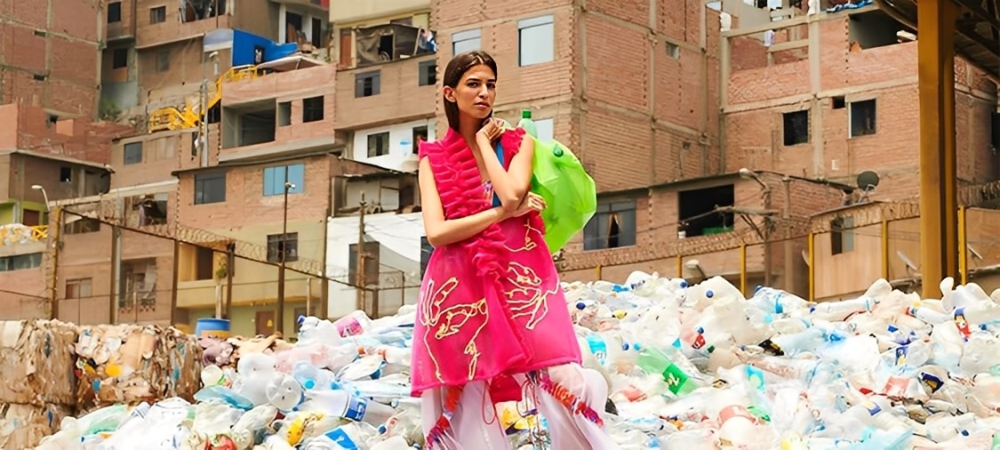

Cada vez que eliges qué ponerte, estás contando una historia. No solo sobre quién eres, sino también sobre cómo te relacionas con el mundo. Lo que muchas veces no vemos es que esa camiseta que compraste por impulso, ese pantalón que usaste dos veces, esa camisa que no sabes con qué combinar, o esa falda que pasó de moda en una sola temporada… puede terminar en el desierto de Atacama.
Y tú dirás: ¿el desierto de qué?
Te explico. En Chile, donde no debería haber nada más que viento, tierra y sol, ahora hay montañas de ropa. Toneladas y toneladas. Prendas que vienen de Estados Unidos, Europa, Asia. Ropa que simplemente desechamos sin más. Que no se vendió, que no se usó, que se tiró porque “ya no está en tendencia”.
Lo más duro es que muchas de esas prendas están hechas de poliéster, nylon, acrílico… materiales que no se degradan fácilmente. Se quedan ahí, soltando microplásticos al aire, contaminando el suelo, quemándose en fogatas improvisadas que liberan gases tóxicos. Todo porque alguien, en algún lugar, pensó que esa prenda ya no servía. O que le gustó más otra.
Y tú dirás: “¿Pero qué tiene que ver mi forma de vestir con eso?” Mucho. Demasiado, realmente.
Cada vez que eliges moda de temporada, estás ayudando —sin querer— a la explotación de recursos, personas, territorios. Estás alimentando una industria que te vende la idea de que necesitas renovar tu clóset cada mes, cada estación, cada tendencia. Pero no lo necesitas. Lo que sí necesitas es reconectar con tu ropa. Con su historia. Con su impacto.
La forma en que te vistes puede ser la mayor ayuda que le das al planeta. Puedes elegir marcas que apuestan por el cambio. Puedes intercambiar ropa con tus amigas. Reparar. Transformar. Reutilizar. Vestirte con memoria, con intención, con resistencia.
Porque sí, tu outfit habla. Y puede hablar de cuidado, de comunidad, de sostenibilidad. Solo tienes que decidir qué historia quieres contar.
